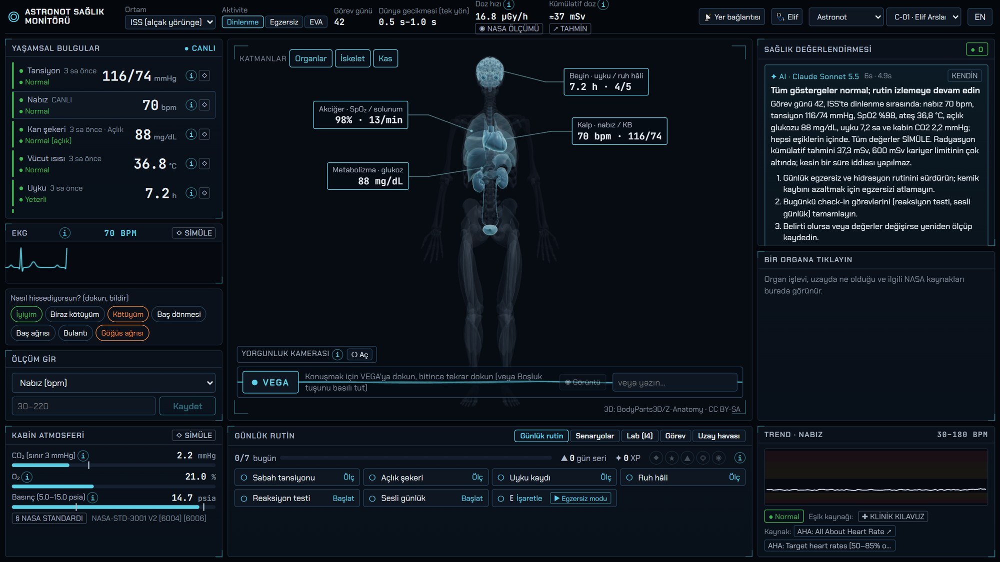
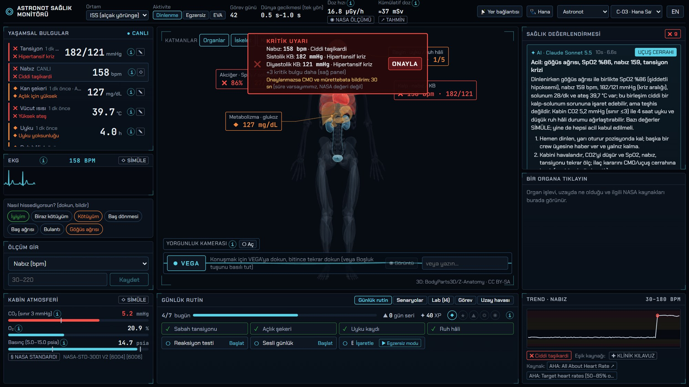
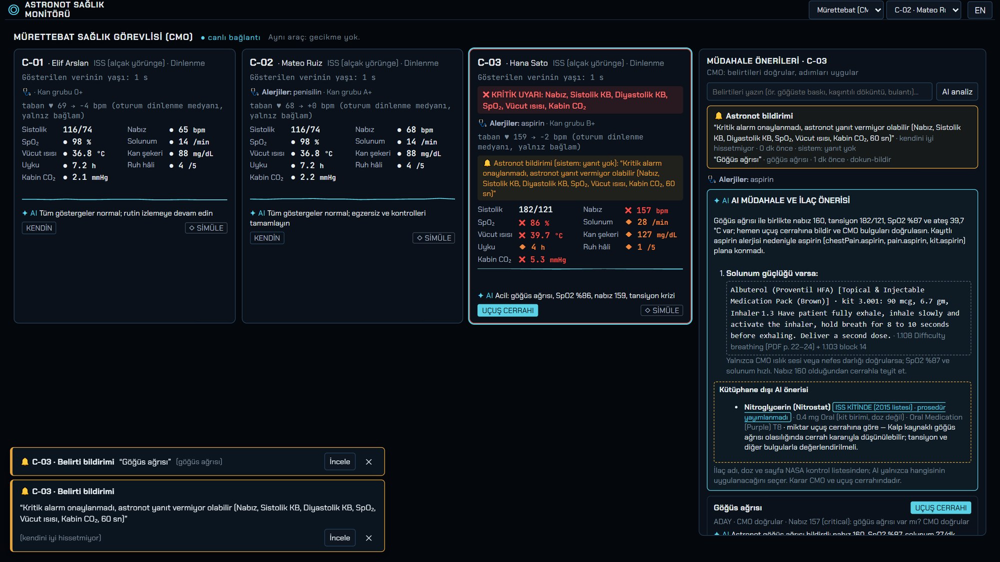
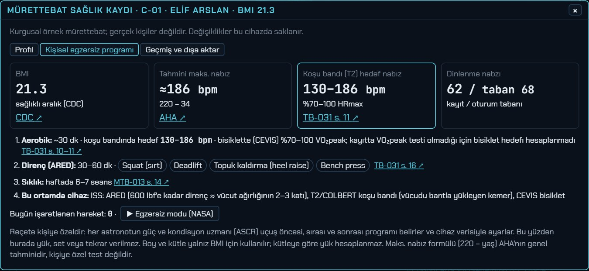
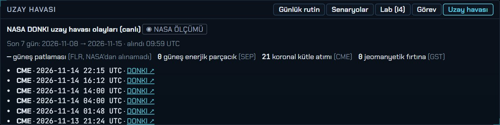
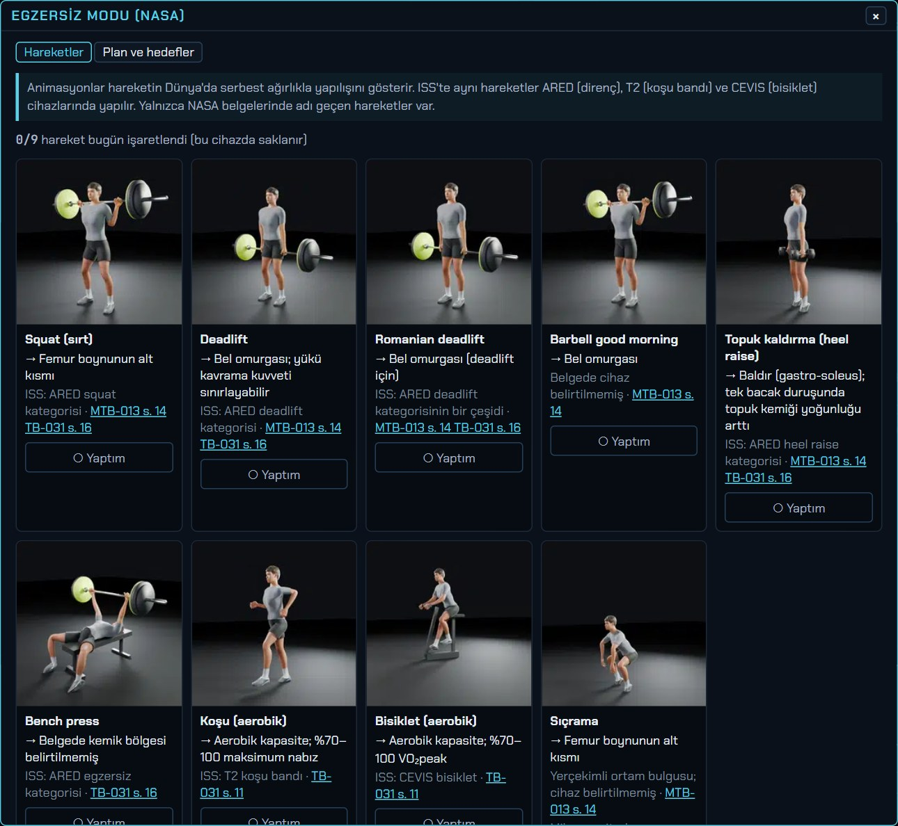

Astronot Sağlık Monitörü
Dünya dakikalarca uzaktayken astronotun kendi sağlığını kendisinin izleyip yönetebilmesi için görsel, sesli ve kaynaklı bir karar destek aracı.
Takım: NASAlytics
Canlı demo: asicservices.com/nasalytics

Mars görevinde. Soru ve cevap için iki katı. ISS'te 1 saniyenin altında.
Sinyal kaybında mürettebat yalnızdır. NASA kontrol listesi bu durumda tedaviye başlamayı söyler.
Radyasyon, izolasyon, Dünya'dan uzaklık, yerçekimi değişimi, kapalı ve düşmanca ortam.
Astronotun kendi sağlığını kendi kendine değerlendirebileceği görsel bir araç: tıklanabilir vücut, rutin hatırlatmalar, oyunlaştırma, grafikler, renk kodları, anlaşılır açıklamalar, farklı görev ortamları.
Tek ekranda vücut, yaşamsal bulgular ve ne yapılacağı. Karar NASA eşikleriyle çalışan kurallarda, açıklama yapay zekâda. Ekrandaki her sayının kaynağı yanında yazıyor; gerçek olmayan hiçbir şey gerçekmiş gibi gösterilmiyor.

1Tıklanabilir 3B vücut. Organ, iskelet, kas katmanları; organa tıklayınca uzayda ne olduğu ve NASA kaynağı.
210 gösterge, renk + simge + yazı. Renk körü dostu; eşikler NASA-STD-3001 ve klinik kılavuzlardan.
3VEGA sesli asistan. Türkçe ve İngilizce konuşur, ölçüm kaydeder, belirtiyi kendiliğinden ekibe bildirir.
4Dokun-bildir. "Göğüs ağrısı" çipine tek dokunuş; CMO ve mürettebat anında görür.
5Günlük rutin + oyunlaştırma. Seri, XP, rozet; reaksiyon testi, sesli günlük, NASA egzersiz modu.
6Yorgunluk kamerası. Cihazın üstünde çalışır, görüntü dışarı çıkmaz.
Alarmı yalnız bu katman verir. Eşikler NASA-STD-3001 ve klinik kılavuzlardan; tarayıcıda çalışır, internet ve AI olmadan da çalışır.
13 kart: ISS acil tıbbi prosedürleri, NASA JSC-48031 kontrol listesi, AHA 2024 ilk yardım. İlaç adı, doz ve sayfa belgeden birebir.
Durumu özetler, kartları sıralar. İlacı yalnız kütüphane kimliğiyle gösterebilir; yazdığı her doz sayısı sunucuda silinir.
Jüri de astronot da neyin gerçek, neyin simülasyon olduğunu tek bakışta görür.
NASA ölçümüNASA standardıKlinik kılavuzYayınTahminVarsayımSimüleBulut AI susar, kurallar ve kartlar çalışmaya devam eder. Veri gemide tutulur, bağlantı dönünce yer kontrole sırayla aktarılır.
Sağlık kaydındaki alerji, önerilen ilaçla eşleşirse satır çizilir: "ALERJİ KAYDIYLA EŞLEŞİYOR, VERME".
Egzersizde yük/set/tekrar yok (NASA bunu kişinin uzmanına bırakır). Uzay havasında risk yorumu yok. Kendi varsayımlarımız "varsayım" etiketiyle gösterilir.

| ISS TEPC doz ölçümleri data.nasa.gov | 10 saniyelik ham ölçümler indirildi. Eylül 2017'nin fırtınasız günlerinden ISS taban doz hızı hesaplandı (16,8 µGy/sa); fırtına günleri senaryoda birebir tekrar oynatılıyor. |
| NASA OSDR RadLab API | Artemis I, Mars yolculuğu ve Mars yüzeyi aletlerinin 438 MB ham verisi çekilip saatlik ortalamaya indirildi; Mayıs 2024 Mars fırtınası buradan. |
| NASA OSDR OSD-569 / OSD-575 | Inspiration4: 4 mürettebat × 7 zaman noktası kan sayımı ve metabolik panel; her değer kişinin kendi referans aralığıyla gösteriliyor. |
| NASA DONKI canlı API | Son 7 günün uzay havası olayları sunucumuzdan çekilir; alınma saatiyle, yorumsuz. |
| NASA-STD-3001, OCHMO teknik özetleri | CO₂, basınç, oksijen, radyasyon, vurgun, kemik kaybı eşikleri belgelerden tek tek okunup kural motoruna işlendi. |
| ISS acil tıbbi prosedürleri, JSC-48031 | Müdahale kartları, ilaç kiti, LOS kuralı; sayfa numarasıyla. |
| OCHMO-TB-031, MTB-013 · NASA HRP | Egzersiz hareketleri ve hedefleri; 5 tehlike ve organ açıklamaları. |
NASA dışı: AHA, ADA, CDC kılavuzları · CSA kaynakları · BodyParts3D / Z-Anatomy (CC BY-SA) · forge-motion (CC0). Tam liste SOURCES.md dosyasında; koddaki her bağlantının kayıtlı olduğunu bir denetim betiği kontrol eder.



Ay ve Mars görevlerinde tıbbi özerklik. Aynı yaklaşım Dünya'da da işe yarar: Antarktika istasyonları, denizaltılar, uzak sahalar, kırsal sağlık.
Sesle konuşan asistan, gerçek fırtına tekrarları, gerçek iletişim gecikmesiyle üç ekran ve en önemlisi yapay zekânın doz yazamadığı bir güvenlik tasarımı.
React 19 + TypeScript + three.js (tarayıcıda kural motoru ve 3B) · FastAPI + WebSocket · MediaPipe (cihaz üstü kamera) · kendi sunucumuzda canlı.
Yapay zekâsız çalışan: alarmlar ve eşikler (kural motoru), radyasyon ve laboratuvar verisi (NASA ölçümleri), ilaç ve dozlar (NASA kontrol listeleri), yorgunluk kamerası (cihaz üstünde MediaPipe).
Yapay zekânın işi: durumu sade dille özetlemek, kartları sıralamak, sesle konuşmak. Modeller: Claude Sonnet 5.5 ve Haiku 5.5 (metin), Gemini (VEGA'nın sesi).
Tıbbi cihaz değildir, tanı koymaz. Yaşamsal değerler simülasyondur ve böyle etiketlidir; gerçek sensör bağlantısı sonraki adımdır.
asicservices.com/nasalytics · telefondan da açılır
Kaynak kod: github.com/chuckywins/nasalytics